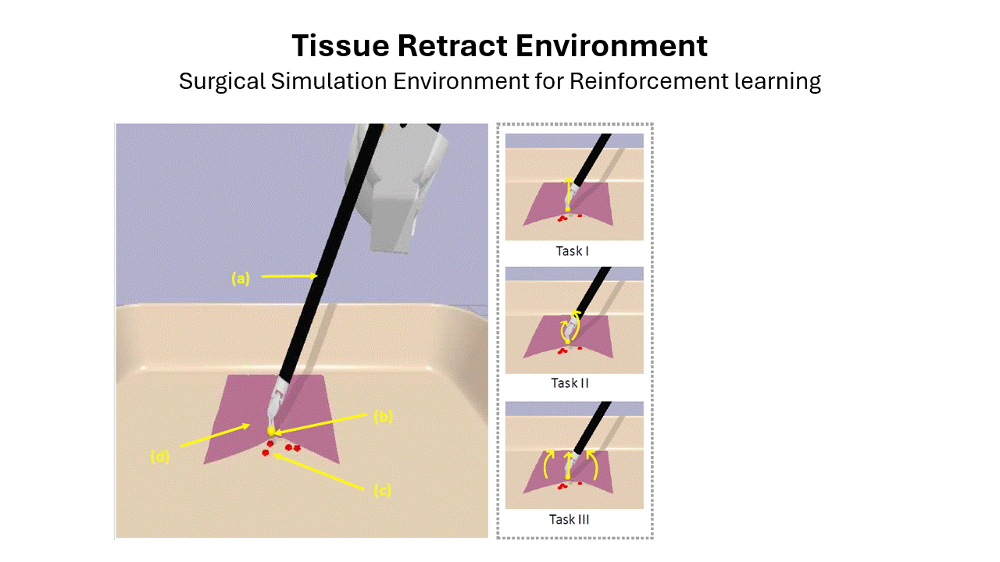
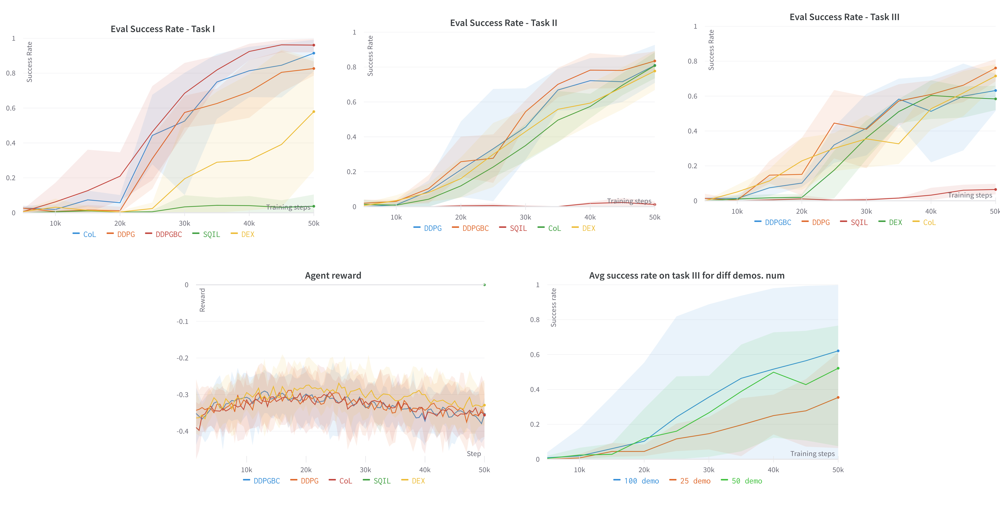
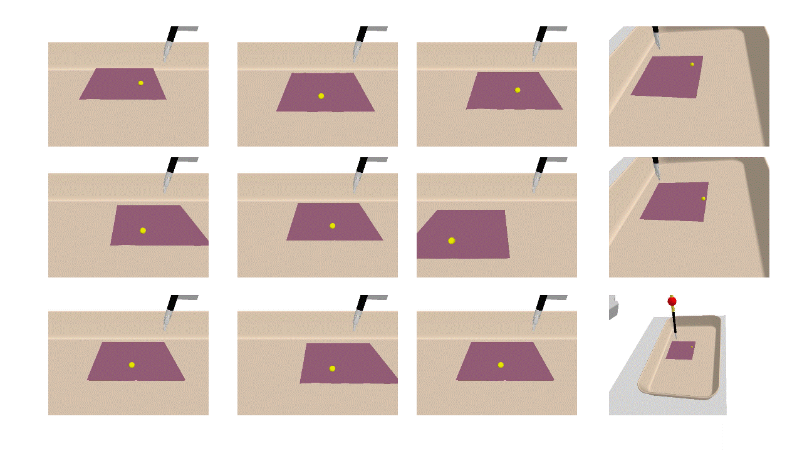

In the context of surgery, robots can provide substantial assistance by performing small, repetitive tasks such as suturing, needle exchange, and tissue retraction, thereby enabling surgeons to concentrate on more complex aspects of the procedure. However, existing surgical task learning mainly pertains to rigid body interactions, whereas the advancement towards more sophisticated surgical robots necessitates the manipulation of soft bodies. Previous work focused on tissue phantoms for soft tissue task learning, which can be expensive and can be an entry barrier to research. Simulation environments present a safe and efficient way to learn surgical tasks before their application to actual tissue. In this study, we create a Robot Operating System (ROS)-compatible physics simulation environment with support for both rigid and soft body interactions within surgical tasks. Furthermore, we investigate the soft tissue interactions facilitated by the patient-side manipulator of the DaVinci surgical robot. Leveraging the pybullet physics engine, we simulate kinematics and establish anchor points to guide the robotic arm when manipulating soft tissue. Using demonstration-guided reinforcement learning (RL) algorithms, we investigate their performance in comparison to traditional reinforcement learning algorithms. Our in silico trials demonstrate a proof-of-concept for autonomous surgical soft tissue retraction. The results corroborate the feasibility of learning soft body manipulation through the application of reinforcement learning agents. This work lays the foundation for future research into the development and refinement of surgical robots capable of managing both rigid and soft tissue interactions.

In the present study, we discuss the complexities of soft tissue interactions with DaVinci robots and explore the use of a simulation environment to learn soft tissue manipulation tasks. To achieve this, we generate a simulation environment supporting soft and rigid body interactions and train agents to perform tissue retraction tasks. We formulate a rule-based policy to generate demonstration data to guide the training of reinforcement learning algorithms. In summary, our primary contributions to this work are threefold:


@misc{singh2023autonomous, title={Autonomous Soft Tissue Retraction Using Demonstration-Guided Reinforcement Learning}, author={Amritpal Singh and Wenqi Shi and May D Wang}, year={2023}, eprint={2309.00837}, archivePrefix={arXiv}, primaryClass={cs.LG} }